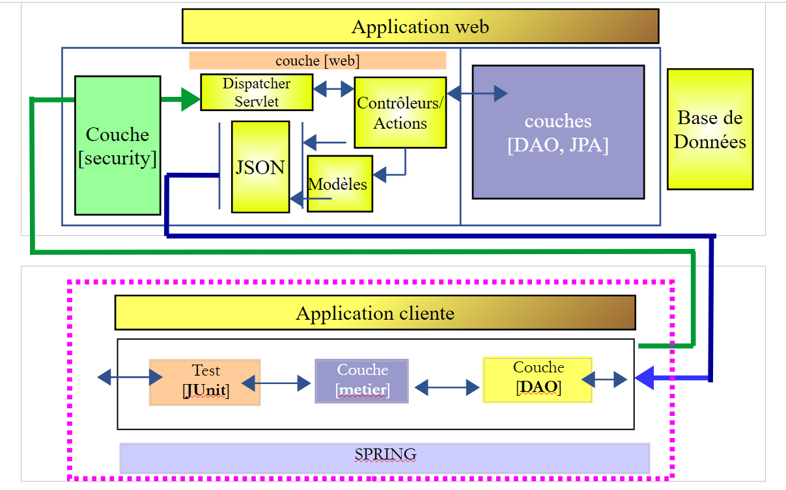

17. [TD]: beveiliging van de webserver / jSON van de verkiezingen
Sleutelwoorden: meerlaagse architectuur, Spring, afhankelijkheidsinjectie, beveiligde webservice / jSON, client / server
We passen nu wat we in het vorige hoofdstuk hebben geleerd toe op de verkiezingen in TD. De architectuur ziet er als volgt uit:
 |
De werkwijze verloopt als volgt:
- het schrijven van de server;
- de client schrijven zonder de [ui]-laag, maar met een JUnit-test van de [métier]-laag;
- schrijven vanaf de client met de laag [ui];
17.1. Support
 |  |
De projecten van dit hoofdstuk zijn te vinden in de map [support / chap-17]. Het script SQL dient om de database te genereren die nodig is voor de tests.
17.2. De database
De database van de beveiligde server moet nu de tabellen [USERS], [ROLES] en [USERS_ROLES] bevatten:
 |  |
Het script SQL voor het aanmaken van de database is beschikbaar in de documentatie.
17.3. De beveiligde server
Om de beveiligde verkiezingsserver in te stellen, hoeven we alleen maar het voorbeeldproject [intro-spring-security-server-01] te kopiëren en te plakken:
 |
Te doen: hernoem de pakketten zoals aangegeven in [1].
Zodra dit is gebeurd, passen we het bestand [pom.xml] als volgt aan:
<project xmlns="http://maven.apache.org/POM/4.0.0" xmlns:xsi="http://www.w3.org/2001/XMLSchema-instance"
xsi:schemaLocation="http://maven.apache.org/POM/4.0.0 http://maven.apache.org/xsd/maven-4.0.0.xsd">
<modelVersion>4.0.0</modelVersion>
<groupId>istia.st.elections</groupId>
<artifactId>elections-security-webjson-metier-dao-spring-data</artifactId>
<version>0.0.1-SNAPSHOT</version>
<name>elections-security-webjson-metier-dao-spring-data</name>
<description>elections spring security</description>
<properties>
<project.build.sourceEncoding>UTF-8</project.build.sourceEncoding>
<java.version>1.8</java.version>
</properties>
<parent>
<groupId>org.springframework.boot</groupId>
<artifactId>spring-boot-starter-parent</artifactId>
<version>1.2.7.RELEASE</version>
</parent>
<dependencies>
<dependency>
<groupId>istia.st.elections</groupId>
<artifactId>elections-webjson-metier-dao-spring-data</artifactId>
<version>0.0.1-SNAPSHOT</version>
</dependency>
<!-- Spring Security -->
...
</dependencies>
<!-- plug-ins -->
<build>
...
</build>
</project>
- vervang op de regels 23-27 de afhankelijkheid van het project [intro-server-webjson-01] door die van het project [elections-webjson-metier-dao-spring-data] dat in paragraaf 12 is besproken;
- voer op de regels 4-7 de kenmerken van het nieuwe project in;
Nu moeten we nog de configuratieklassen van het project aanpassen:
[DaoConfig]
package elections.security.config;
import org.springframework.context.annotation.Bean;
import org.springframework.context.annotation.ComponentScan;
import org.springframework.context.annotation.Import;
import org.springframework.data.jpa.repository.config.EnableJpaRepositories;
@EnableJpaRepositories(basePackages = { "elections.security.repositories" })
@ComponentScan(basePackages = { "elections.security.dao" })
@Import({ elections.dao.config.DaoConfig.class })
public class DaoConfig {
// constanten
final static private String[] ENTITIES_PACKAGES = { "elections.dao.entities", "elections.security.entities" };
@Bean
public String[] packagesToScan() {
return ENTITIES_PACKAGES;
}
}
De wijzigingen staan in de volgende regels:
- regels 8, 9, 14: voer de juiste pakketnamen in;
- regel 10: de geïmporteerde klasse is nu [elections.dao.config.DaoConfig] uit het project [elections-webjson-metier-dao-spring-data];
Opmerking: zoals gezegd werkt deze configuratie alleen als de klasse [elections.dao.config.DaoConfig] de annotatie [@Configuration] heeft. Controleer dit.
[SecurityConfig]
package elections.security.config;
...
@EnableWebSecurity
@ComponentScan(basePackages = { "elections.security.service" })
@Import({ WebConfig.class, DaoConfig.class })
public class SecurityConfig extends WebSecurityConfigurerAdapter {
...
}
De wijzigingen staan op de volgende regels:
- regel 6: wijzig de naam van het pakket;
Dat is alles. Voer een eerste test uit door de test JUnit [] uit te voeren:
 |
Voer de bootklasse [Boot] uit en voer vervolgens met de Chrome-extensie [Advanced Rest Client] de volgende test uit:
 |
In [1] staat het verzoek. In [3] staat het antwoord. In [2] is de header HTTP de authenticatieheader van de gebruiker [admin, admin]: Authorization:Basic YWRtaW46YWRtaW4=
Vraag nu de concurrerende lijsten op:
 |
17.4. De client van de beveiligde server zonder de laag [ui]
 |
Kopieer en plak het project [elections-ui-metier-dao-webjson] in het project [elections-metier-dao-security-webjson].
 |
Te doen: hernoem in [1] de pakketten indien nodig en verwijder die van de laag [ui] en de opstartklassen [boot].
We gaan nu te werk zoals beschreven in paragraaf 16.5.
17.4.1. Maven-configuratie
Alleen het identificatiegedeelte van het project verandert:
<project xmlns="http://maven.apache.org/POM/4.0.0" xmlns:xsi="http://www.w3.org/2001/XMLSchema-instance"
xsi:schemaLocation="http://maven.apache.org/POM/4.0.0 http://maven.apache.org/xsd/maven-4.0.0.xsd">
<modelVersion>4.0.0</modelVersion>
<groupId>istia.st.elections</groupId>
<artifactId>elections-metier-dao-security-webjson</artifactId>
<version>0.0.1-SNAPSHOT</version>
<description>Client jUnit du serveur web / jSON</description>
<name>elections-metier-dao-security-webjson</name>
...
17.4.2. Herstructurering van de laag [métier]
 |
De interface [IElectionsMetier] verandert als volgt:
package elections.security.client.metier;
import elections.security.client.entities.ListeElectorale;
import elections.security.client.entities.User;
public interface IElectionsMetier {
// authenticatie
public void authenticate(User user);
// de lijsten van de kandidaten ophalen
public ListeElectorale[] getListesElectorales(User user);
// het aantal te vervullen zetels
public int getNbSiegesAPourvoir(User user);
// de kiesdrempel
public double getSeuilElectoral(User user);
// registratie van de resultaten
public void recordResultats(User user, ListeElectorale[] listesElectorales);
// de zetelverdeling
public ListeElectorale[] calculerSieges(User user, ListeElectorale[] listesElectorales);
}
Alle methoden hebben als eerste parameter de gebruiker die de bronnen van de beveiligde server wil gebruiken.
De implementatie [ElectionsMetier] verandert als volgt:
package elections.security.client.metier;
import java.io.IOException;
import org.springframework.beans.factory.annotation.Autowired;
import org.springframework.context.ApplicationContext;
import org.springframework.stereotype.Component;
import com.fasterxml.jackson.core.type.TypeReference;
import com.fasterxml.jackson.databind.ObjectMapper;
import elections.security.client.dao.IClientDao;
import elections.security.client.entities.ElectionsConfig;
import elections.security.client.entities.ElectionsException;
import elections.security.client.entities.ListeElectorale;
import elections.security.client.entities.User;
@Component
public class ElectionsMetier implements IElectionsMetier {
@Autowired
private IClientDao dao;
@Autowired
private ApplicationContext context;
// de opzet van de verkiezing
private ElectionsConfig electionsConfig;
private ElectionsConfig getElectionsConfig(User user) {
if(electionsConfig!=null){
return electionsConfig;
}
// toewijzers jSON
ObjectMapper mapperResponse = context.getBean(ObjectMapper.class);
try {
// verzoek
Response<ElectionsConfig> response = mapperResponse.readValue(dao.getResponse(user, "/getElectionsConfig", null),
new TypeReference<Response<ElectionsConfig>>() {
});
// fout?
if (response.getStatus() != 0) {
// er wordt 1 uitzondering gegenereerd
throw new ElectionsException(response.getStatus(), response.getMessages());
} else {
electionsConfig = response.getBody();
return electionsConfig;
}
} catch (ElectionsException e1) {
throw e1;
} catch (IOException | RuntimeException e2) {
throw new ElectionsException(100, e2);
}
}
@Override
public ListeElectorale[] getListesElectorales(User user) {
...
}
@Override
public int getNbSiegesAPourvoir(User user) {
return getElectionsConfig(user).getNbSiegesAPourvoir();
}
@Override
public double getSeuilElectoral(User user) {
return getElectionsConfig(user).getSeuilElectoral();
}
@Override
public void recordResultats(User user, ListeElectorale[] listesElectorales) {
...
}
@Override
public ListeElectorale[] calculerSieges(User user, ListeElectorale[] listesElectorales) {
...
}
@Override
public void authenticate(User user) {
dao.getResponse(user, "/authenticate", null);
}
}
Opdracht: vul de bovenstaande code aan.
17.4.3. Spring-configuratie
 |
De klasse [MetierConfig] verandert als volgt:
package elections.security.client.config;
...
@ComponentScan({ "elections.security.client.dao", "elections.security.client.metier" })
public class MetierConfig {
Regel 5: de te doorzoeken pakketten moeten worden bijgewerkt.
17.4.4. De test JUnit van de laag [métier]
 |
De testklasse [Test01] verandert als volgt:
package elections.security.client.metier.junit;
import org.junit.Assert;
import org.junit.BeforeClass;
import org.junit.Test;
import org.junit.runner.RunWith;
import org.springframework.beans.factory.annotation.Autowired;
import org.springframework.boot.test.SpringApplicationConfiguration;
import org.springframework.test.context.junit4.SpringJUnit4ClassRunner;
import com.fasterxml.jackson.core.JsonProcessingException;
import com.fasterxml.jackson.databind.ObjectMapper;
import elections.security.client.config.MetierConfig;
import elections.security.client.entities.ElectionsException;
import elections.security.client.entities.ListeElectorale;
import elections.security.client.entities.User;
import elections.security.client.metier.IElectionsMetier;
@SpringApplicationConfiguration(classes = MetierConfig.class)
@RunWith(SpringJUnit4ClassRunner.class)
public class Test01 {
// laag [electionsMetier]
@Autowired
private IElectionsMetier electionsMetier;
// mapper jSON
private final ObjectMapper mapper = new ObjectMapper();
// gebruikers
static private User admin;
static private User user;
static private User unknown;
@BeforeClass
public static void initTest() {
admin = new User("admin", "admin");
user = new User("user", "user");
unknown = new User("x", "y");
}
@Test()
public void checkUserUser() {
ElectionsException se = null;
try {
electionsMetier.authenticate(user);
} catch (ElectionsException e) {
se = e;
}
Assert.assertNotNull(se);
Assert.assertEquals("403 Forbidden", se.getErreurs().get(0));
}
@Test()
public void checkUserUnknown() {
ElectionsException se = null;
try {
electionsMetier.authenticate(unknown);
} catch (ElectionsException e) {
se = e;
}
Assert.assertNotNull(se);
Assert.assertEquals("401 Unauthorized", se.getErreurs().get(0));
}
@Test()
public void checkUserAdmin() {
ElectionsException se = null;
try {
electionsMetier.authenticate(admin);
} catch (ElectionsException e) {
se = e;
}
Assert.assertNull(se);
}
/**
* vérification 1 : méthode de calcul des sièges on fixe en dur les listes
*/
@Test
public void calculSieges1() {
// de tabel met de 7 kandidatenlijsten wordt aangemaakt
ListeElectorale[] listes = new ListeElectorale[7];
listes[0] = new ListeElectorale("A", 32000, 0, false);
listes[1] = new ListeElectorale("B", 25000, 0, false);
listes[2] = new ListeElectorale("C", 16000, 0, false);
listes[3] = new ListeElectorale("D", 12000, 0, false);
listes[4] = new ListeElectorale("E", 8000, 0, false);
listes[5] = new ListeElectorale("F", 4500, 0, false);
listes[6] = new ListeElectorale("G", 2500, 0, false);
// de zetels van elke lijst worden berekend
listes = electionsMetier.calculerSieges(admin,listes);
// de resultaten worden gecontroleerd
Assert.assertEquals(2, listes[0].getSieges());
Assert.assertFalse(listes[0].isElimine());
Assert.assertEquals(2, listes[1].getSieges());
Assert.assertFalse(listes[1].isElimine());
Assert.assertEquals(1, listes[2].getSieges());
Assert.assertFalse(listes[2].isElimine());
Assert.assertEquals(1, listes[3].getSieges());
Assert.assertFalse(listes[3].isElimine());
Assert.assertEquals(0, listes[4].getSieges());
Assert.assertFalse(listes[4].isElimine());
Assert.assertEquals(0, listes[5].getSieges());
Assert.assertTrue(listes[5].isElimine());
Assert.assertEquals(0, listes[6].getSieges());
Assert.assertTrue(listes[6].isElimine());
}
/**
* vérification 2 : méthode de calcul des sièges on demande les listes à la couche [metier] puis on fixe en dur les
* voix
*/
@Test
public void calculSieges2() {
// de tabel met de 7 kandidatenlijsten wordt aangemaakt
ListeElectorale[] listes = electionsMetier.getListesElectorales(admin);
// de stemmen worden vastgelegd
listes[0].setVoix(32000);
listes[1].setVoix(25000);
listes[2].setVoix(16000);
listes[3].setVoix(12000);
listes[4].setVoix(8000);
listes[5].setVoix(4500);
listes[6].setVoix(2500);
// de behaalde zetels per lijst worden berekend
listes = electionsMetier.calculerSieges(admin,listes);
// de resultaten worden gecontroleerd
Assert.assertEquals(2, listes[0].getSieges());
Assert.assertFalse(listes[0].isElimine());
Assert.assertEquals(2, listes[1].getSieges());
Assert.assertFalse(listes[1].isElimine());
Assert.assertEquals(1, listes[2].getSieges());
Assert.assertFalse(listes[2].isElimine());
Assert.assertEquals(1, listes[3].getSieges());
Assert.assertFalse(listes[3].isElimine());
Assert.assertEquals(0, listes[4].getSieges());
Assert.assertFalse(listes[4].isElimine());
Assert.assertEquals(0, listes[5].getSieges());
Assert.assertTrue(listes[5].isElimine());
Assert.assertEquals(0, listes[6].getSieges());
Assert.assertTrue(listes[6].isElimine());
}
/**
* vérification 3 méthode de calcul des sièges on provoque une exception
*/
@Test(expected = ElectionsException.class)
public void calculSieges3() {
// er wordt een tabel aangemaakt met 24 kandidatenlijsten die elk 1 stem hebben
ListeElectorale[] listes = new ListeElectorale[25];
// de 25 lijsten krijgen hetzelfde aantal stemmen (4%)
for (int i = 0; i < listes.length; i++) {
listes[i] = new ListeElectorale("Liste" + (i + 1), 1, 0, false);
}
// zetelverdeling – normaal gesproken zou het ElectionsException moeten zijn
// met een kiesdrempel van 5%
electionsMetier.calculerSieges(admin,listes);
}
/**
* enregistrement des résultats de l'élection
*
* @throws JsonProcessingException
*/
@Test
public void ecritureResultatsElections() throws JsonProcessingException {
// we stellen de tabel met de 7 kandidatenlijsten op
ListeElectorale[] listes = electionsMetier.getListesElectorales(admin);
// de stemmen worden vastgelegd
listes[0].setVoix(32000);
listes[1].setVoix(25000);
listes[2].setVoix(16000);
listes[3].setVoix(12000);
listes[4].setVoix(8000);
listes[5].setVoix(4500);
listes[6].setVoix(2500);
// de behaalde zetels per lijst worden berekend
listes = electionsMetier.calculerSieges(admin,listes);
// de resultaten worden weergegeven
for (int i = 0; i < listes.length; i++) {
System.out.println(mapper.writeValueAsString(listes[i]));
}
// de resultaten worden opgeslagen in de database
electionsMetier.recordResultats(admin,listes);
// de resultaten worden gecontroleerd
listes = electionsMetier.getListesElectorales(admin);
// de resultaten worden weergegeven
for (int i = 0; i < listes.length; i++) {
System.out.println(mapper.writeValueAsString(listes[i]));
}
Assert.assertEquals(2, listes[0].getSieges());
Assert.assertFalse(listes[0].isElimine());
Assert.assertEquals(2, listes[1].getSieges());
Assert.assertFalse(listes[1].isElimine());
Assert.assertEquals(1, listes[2].getSieges());
Assert.assertFalse(listes[2].isElimine());
Assert.assertEquals(1, listes[3].getSieges());
Assert.assertFalse(listes[3].isElimine());
Assert.assertEquals(0, listes[4].getSieges());
Assert.assertFalse(listes[4].isElimine());
Assert.assertEquals(0, listes[5].getSieges());
Assert.assertTrue(listes[5].isElimine());
Assert.assertEquals(0, listes[6].getSieges());
Assert.assertTrue(listes[6].isElimine());
}
}
Te doen: begrijp deze test en controleer of deze slaagt.
17.5. De client van de beveiligde server met een laag [console]
 |
Met NetBeans openen we de Maven-projecten [elections-metier-dao-security-webjson] en [elections-ui-metier-dao-webjson] en bouwen we vervolgens een nieuw project [elections-console-metier-dao-security-webjson] door het project [elections-ui-metier-dao-webjson] te kopiëren en te plakken:
 |
De meeste klassen van het nieuwe project [3] zijn afkomstig uit het project [elections-ui-metier-dao-webjson] en [2], dat de client was van de onbeveiligde webserver / jSON:
 |
Ga als volgt te werk om het nieuwe Maven-project op te zetten:
- kopieer en plak het project [elections-ui-metier-dao-webjson] in het project [elections-ui-metier-dao-security-webjson];
- in het nieuwe project:
- verwijder de pakketten [elections.client.dao, elections.client.metier, elections.client.entities];
- in het pakket [elections.client.ui]: behoud alleen de consoleklasse [ElectionsConsole] en de bijbehorende interface [IElectionsUI];
- hernoem de pakketten zoals aangegeven in [3];
- los de importproblemen in de verschillende klassen op via [clic droit / Fix Imports];
Op dit moment bevat het nieuwe project nog veel fouten.
17.5.1. Maven-configuratie
Het bestand [pom.xml] van het nieuwe project ziet er als volgt uit:
<project xmlns="http://maven.apache.org/POM/4.0.0" xmlns:xsi="http://www.w3.org/2001/XMLSchema-instance"
xsi:schemaLocation="http://maven.apache.org/POM/4.0.0 http://maven.apache.org/xsd/maven-4.0.0.xsd">
<modelVersion>4.0.0</modelVersion>
<groupId>istia.st.elections</groupId>
<artifactId>elections-console-metier-dao-security-webjson</artifactId>
<version>0.0.1-SNAPSHOT</version>
<name>elections-console-metier-dao-security-webjson</name>
<description>couche console du client web / jSON</description>
<properties>
<project.build.sourceEncoding>UTF-8</project.build.sourceEncoding>
<java.version>1.8</java.version>
</properties>
<parent>
<groupId>org.springframework.boot</groupId>
<artifactId>spring-boot-starter-parent</artifactId>
<version>1.2.7.RELEASE</version>
</parent>
<dependencies>
<dependency>
<groupId>istia.st.elections</groupId>
<artifactId>elections-metier-dao-security-webjson</artifactId>
<version>0.0.1-SNAPSHOT</version>
</dependency>
</dependencies>
<build>
<plugins>
<plugin>
<groupId>org.apache.maven.plugins</groupId>
<artifactId>maven-surefire-plugin</artifactId>
<version>2.18.1</version>
</plugin>
</plugins>
</build>
</project>
- regels 4-8: de Maven-identiteit van het nieuwe project;
- regels 22-26: de afhankelijkheid van het project [elections-metier-dao-security-webjson] dat we zojuist in paragraaf 17.4 hebben gebouwd en dat de lagen [DAO] en [métier] levert;
17.5.2. Spring-configuratie
 |
De klasse [UiConfig] ziet er als volgt uit:
package elections.security.client.config;
import elections.security.client.entities.User;
import org.springframework.context.annotation.Bean;
import org.springframework.context.annotation.ComponentScan;
import org.springframework.context.annotation.Import;
@Import(MetierConfig.class)
@ComponentScan(basePackages = {"elections.security.client.console","elections.security.client.swing"})
public class UiConfig {
// beheerder
private final User ADMIN = new User("admin", "admin");
@Bean
private User admin() {
return ADMIN;
}
}
- regel 8: we importeren de klasse [elections.security.client.config.MetierConfig] uit het project [elections-metier-dao-security-webjson] dat in paragraaf 17.4 is besproken;
- regel 9: we definiëren de pakketten waarin de Spring-beans zich bevinden;
- regels 12-18: de bean [admin] is de gebruiker [admin, admin] die door de console-applicatie zal worden gebruikt. We herinneren ons dat dit de enige gebruiker is die bevoegd is om de beveiligde webserver / jSON te benaderen;
17.5.3. De opstarttoepassing van de console
 |
De klasse [ElectionsConsole] ontwikkelt zich als volgt:
package elections.security.client.console;
import java.util.Arrays;
import java.util.Comparator;
import java.util.Scanner;
import org.springframework.beans.factory.annotation.Autowired;
import org.springframework.stereotype.Component;
import elections.security.client.entities.ElectionsException;
import elections.security.client.entities.ListeElectorale;
import elections.security.client.entities.User;
import elections.security.client.metier.IElectionsMetier;
@Component
public class ElectionsConsole implements IElectionsUI {
@Autowired
private IElectionsMetier electionsMetier;
@Autowired
private User admin;
@Override
public void run() {
// de lijsten in de competitie
ListeElectorale[] listes;
// gegevensinvoer
try (Scanner clavier = new Scanner(System.in)) {
// de lijsten in de verkiezing worden opgevraagd bij de laag [metier]
listes = electionsMetier.getListesElectorales(admin);
// de stemmen worden ingevoerd
System.out.println("Il y a " + listes.length
+ " listes en compétition. Veuillez indiquer le nombre de voix de chacune d'elles :");
for (int i = 0; i < listes.length; i++) {
boolean saisieOK = false;
while (!saisieOK) {
System.out.print("Nombre de voix de la liste [" + listes[i].getNom() + "] : ");
try {
listes[i].setVoix(Integer.parseInt(clavier.nextLine()));
saisieOK = true;
} catch (ElectionsException | NumberFormatException ex) {
System.out.println("Nombre de voix incorrect. Veuillez recommencer");
}
}
}
}
// de zetels worden berekend
listes=electionsMetier.calculerSieges(admin,listes);
// de resultaten worden geregistreerd
electionsMetier.recordResultats(admin,listes);
// de lijsten worden gesorteerd in aflopende volgorde van het aantal stemmen
Arrays.sort(listes, new CompareListesElectorales());
// de lijsten worden weergegeven
System.out.println("\nRésultats de l'élection\n");
for (int i = 0; i < listes.length; i++) {
System.out.println(listes[i]);
}
}
// vergelijkingsklasse van kieslijsten
class CompareListesElectorales implements Comparator<ListeElectorale> {
// vergelijking van twee kandidatenlijsten op basis van het aantal stemmen
@Override
public int compare(ListeElectorale listeElectorale1, ListeElectorale listeElectorale2) {
// de stemmen van deze twee lijsten worden vergeleken
int nbVoix1 = listeElectorale1.getVoix();
int nbVoix2 = listeElectorale2.getVoix();
if (nbVoix1 < nbVoix2) {
return +1;
} else {
if (nbVoix1 > nbVoix2)
return -1;
else
return 0;
}
}
}
}
De klasse ElectionsConsole verandert nauwelijks. Houd er alleen rekening mee dat de methoden van de laag [métier] nu als eerste parameter een gebruiker vereisen (regels 31, 49, 51). Deze wordt geleverd door de injectie in regels 21-22. De geïnjecteerde gebruiker is degene die bevoegd is om de webserver /jSON te benaderen.
Te doen: test de console-applicatie (vergeet niet eerst de beveiligde server te starten).
17.6. De client van de beveiligde server met een [swing]-laag
 |
We maken een nieuw NetBeans-project [elections-swing-metier-dao-security-webjson] aan door het project [elections-ui-metier-dao-webjson] te kopiëren en te plakken:
 |
In het nieuwe project [2]:
- verwijder de pakketten [elections.client.dao, elections.client.metier, elections.client.entities];
- verwijder in het pakket [elections.client.ui] de klassen [ElectionsConsole, IElectionsUI];
- hernoem de pakketten zoals aangegeven in [2];
- in het pakket [elections.security.client.swing], hernoem de klasse [AbstractElectionsSwing] die de grafische interface implementeert naar [AbstractElectionsMainForm] en de klasse [ElectionsSwing] die de gebeurtenishandlers van degrafische interface in [ElectionsMainForm];
- los de importproblemen in de verschillende klassen op via [clic droit / Fix Imports];
Op dit moment zijn er nog veel fouten.
17.6.1. Maven-configuratie
Het bestand [pom.xml] ontwikkelt zich als volgt:
<project xmlns="http://maven.apache.org/POM/4.0.0" xmlns:xsi="http://www.w3.org/2001/XMLSchema-instance"
xsi:schemaLocation="http://maven.apache.org/POM/4.0.0 http://maven.apache.org/xsd/maven-4.0.0.xsd">
<modelVersion>4.0.0</modelVersion>
<groupId>istia.st.elections</groupId>
<artifactId>elections-swing-metier-dao-security-webjson</artifactId>
<version>0.0.1-SNAPSHOT</version>
<name>elections-swing-metier-dao-security-webjson</name>
<description>couche swing du client web / jSON</description>
<properties>
<project.build.sourceEncoding>UTF-8</project.build.sourceEncoding>
<java.version>1.8</java.version>
</properties>
<parent>
<groupId>org.springframework.boot</groupId>
<artifactId>spring-boot-starter-parent</artifactId>
<version>1.2.7.RELEASE</version>
</parent>
<dependencies>
<dependency>
<groupId>istia.st.elections</groupId>
<artifactId>elections-console-metier-dao-security-webjson</artifactId>
<version>0.0.1-SNAPSHOT</version>
</dependency>
</dependencies>
<build>
<plugins>
<plugin>
<groupId>org.apache.maven.plugins</groupId>
<artifactId>maven-surefire-plugin</artifactId>
<version>2.18.1</version>
</plugin>
</plugins>
</build>
</project>
- regels 4-8: de Maven-identiteit van het nieuwe project;
- regels 22-26: een afhankelijkheid van het console-project dat we zojuist in paragraaf 17.5 hebben besproken;
17.6.2. Spring-configuratie
Dit project maakt gebruik van de Spring-configuratie van het console-project dat het importeert (zie paragraaf 17.5.2).
17.6.3. De weergaven van de Swing-applicatie
 |
Dit project maakt gebruik van twee weergaven:
 |
- de aanmeldingsweergave [1] is nieuw. Deze dient om de gebruiker te authenticeren die de applicatie wil gebruiken. Deze maakt gebruik van de klassen:
- [AbstractElectionsConnectForm], die de weergave implementeert;
- [ElectionsConnectForm], die de gebeurtenissen van de weergave beheert;
- de weergave [2] is bekend. Dit is de weergave die tot nu toe werd gebruikt. Deze maakt gebruik van de volgende klassen:
- [AbstractElectionsMainForm], die de weergave implementeert;
- [ElectionsMainForm], die de gebeurtenissen van de weergave afhandelt;
17.6.4. De sessie
 |
Wanneer een Swing-toepassing meerdere weergaven heeft, moet er een manier worden gevonden waarop de ene weergave informatie kan doorgeven aan een andere weergave. We maken gebruik van een concept uit de webontwikkeling: de sessie, waarmee weergaven die aan een specifieke gebruiker zijn gekoppeld, informatie kunnen delen. Dit concept wordt hier geïmplementeerd met behulp van een Spring-singleton die wordt geïnjecteerd in de twee klassen die de gebeurtenissen van de twee weergaven beheren:
package elections.security.client.swing;
import elections.security.client.entities.User;
import org.springframework.stereotype.Component;
@Component
public class UiSession {
// de aangemelde gebruiker
private User user;
// getters en setters
...
}
- regel 6: de klasse [UiSession] is een Spring-component;
- regel 10: deze dient slechts voor één doel: het onthouden van de gebruiker die inlogt via de weergave [1]. De weergave [2], die deze informatie nodig heeft, haalt deze daar op;
17.6.5. De boot-klasse
 |
De opstartklasse van de grafische applicatie is als volgt:
package elections.security.client.boot;
import elections.security.client.console.IElectionsUI;
public class BootElectionsSwing extends AbstractBootElections {
public static void main(String[] arguments) {
new BootElectionsSwing().run();
}
@Override
protected IElectionsUI getUI() {
return ctx.getBean("electionsConnectForm", IElectionsUI.class);
}
}
- regel 5: de klasse [BootElectionsSwing] is een uitbreiding van de klasse [AbstractBootElections] die is gedefinieerd in het consoleproject dat in de afhankelijkheden van het project voorkomt;
- regels 10-13: de klasse [BootElectionsSwing] zorgt ervoor dat de inlogweergave [ElectionsConnectForm] wordt weergegeven;
- regels 6-8: de methode [run] van deze klasse wordt uitgevoerd;
17.6.6. De klasse [ElectionsMainForm]
De klasse [ElectionsMainForm] heette voorheen [ElectionsSwing]. Deze klasse beheert de gebeurtenissen van de weergave [AbstractElectionsMainForm]. De code ervan verloopt als volgt:
package elections.security.client.swing;
import elections.security.client.console.IElectionsUI;
import java.awt.Dimension;
import java.awt.Toolkit;
import java.util.ArrayList;
import java.util.List;
import javax.swing.DefaultListModel;
import javax.swing.JLabel;
import javax.swing.JMenuItem;
import javax.swing.JOptionPane;
import org.springframework.beans.factory.annotation.Autowired;
import org.springframework.stereotype.Component;
import elections.security.client.entities.ElectionsException;
import elections.security.client.entities.ListeElectorale;
import elections.security.client.entities.User;
import elections.security.client.metier.IElectionsMetier;
@Component
public class ElectionsMainForm extends AbstractElectionsMainForm implements IElectionsUI {
private static final long serialVersionUID = 1L;
// referentie op de laag [métier]
@Autowired
private IElectionsMetier metier;
// sessie UI
@Autowired
private UiSession uiSession;
// aangemelde gebruiker
private User user;
// sjablonen van de lijsten JList
private DefaultListModel<String> modèleNomsVoix = null;
private DefaultListModel<String> modèleRésultats = null;
// de lijsten in de competitie
private ListeElectorale[] listes;
// door de gebruiker ingevoerde lijsten
private final List<ListeElectorale> listesSaisies = new ArrayList<>();
private ListeElectorale[] tListesSaisies;
// initialisaties
@Override
protected void init() {
// genereren van componenten door de bovenliggende klasse
super.init();
// lokale initialisaties
modèleNomsVoix = new DefaultListModel<>();
jListNomsVoix.setModel(modèleNomsVoix);
modèleRésultats = new DefaultListModel<>();
jListResultats.setModel(modèleRésultats);
String info;
boolean erreur = false;
try {
// de lijsten worden opgevraagd bij de laag [métier]
listes = metier.getListesElectorales(user);
// de namen van de lijsten worden gekoppeld aan de keuzelijst jComboBoxNomsListes
for (int i = 0; i < listes.length; i++) {
jComboBoxNomsListes.addItem(String.format("%s - %s", listes[i].getId(), listes[i].getNom()));
}
// evenals de parameters van de verkiezing
int nbSiegesAPourvoir = metier.getNbSiegesAPourvoir(user);
double seuilElectoral = metier.getSeuilElectoral(user);
// de labels die aan deze twee gegevens zijn gekoppeld, worden geïnitialiseerd
jLabelSAP.setText(jLabelSAP.getText() + nbSiegesAPourvoir);
jLabelSE.setText(jLabelSE.getText() + seuilElectoral);
// succesbericht
info = "Source de données lue avec succès";
} catch (ElectionsException ex1) {
// de fout wordt geregistreerd
info = getInfoForException("Les erreurs suivantes se sont produites :", ex1);
erreur = true;
} catch (RuntimeException ex2) {
// de fout wordt genoteerd
info = getInfoForException("Les erreurs suivantes se sont produites :", ex2);
erreur = true;
}
// fout?
if (erreur) {
// de informatie wordt weergegeven
jTextPaneMessages.setText(info);
jTextPaneMessages.setCaretPosition(0);
return;
} else {
jTextPaneMessages.setText("");
}
// formulierstatus
Utilitaires.setEnabled(new JLabel[]{jLabelAjouter, jLabelCalculer, jLabelEnregistrer, jLabelSupprimer}, false);
Utilitaires.setEnabled(
new JMenuItem[]{jMenuItemAjouter, jMenuItemCalculer, jMenuItemEnregistrer, jMenuItemSupprimer}, false);
// venster centreren
Dimension screenSize = Toolkit.getDefaultToolkit().getScreenSize();
Dimension frameSize = getSize();
if (frameSize.height > screenSize.height) {
frameSize.height = screenSize.height;
}
if (frameSize.width > screenSize.width) {
frameSize.width = screenSize.width;
}
setLocation((screenSize.width - frameSize.width) / 2, (screenSize.height - frameSize.height) / 2);
}
...
@Override
public void run() {
// gebruikersgegevens opslaan
user = uiSession.getUser();
// venster initialiseren
init();
setVisible(true);
}
}
- regels 32-33: invoegen van de applicatiesessie;
- regels 112-119: de weergave wordt, net als eerder, geactiveerd via de methode [run];
- regel 115: de gebruiker wordt uit de sessie opgehaald. Deze is daar geplaatst door de code van de inlogweergave [ElectionsConnectForm]. Vervolgens wordt de code aangepast zodat de eerste parameter van de aanroepen naar de laag [métier] deze gebruiker is (bijvoorbeeld regels 63, 69-70);
17.6.7. De weergave [AbstractElectionsConnectForm]
 |
Maak met NetBeans het volgende formulier:
 |
De klasse zal de methode die de klik op de menuoptie [Connexion] afhandelt niet zelf implementeren. Ze zal een beroep doen op een als abstract gedeclareerde methode [doConnecter] en de klasse van de weergave zal zelf als abstract worden gedeclareerd. De statische methode [main], die automatisch is gegenereerd, wordt verwijderd.
17.6.8. De gebeurtenisafhandeling van het inlogscherm
 |
De klasse [ElectionsConnectForm] implementeert de gebeurtenisafhandeling van de inlogweergave als volgt:
package elections.security.client.swing;
import elections.security.client.console.IElectionsUI;
import elections.security.client.entities.ElectionsException;
import elections.security.client.entities.User;
import elections.security.client.metier.IElectionsMetier;
import java.awt.Dimension;
import java.awt.Toolkit;
import javax.swing.SwingUtilities;
import org.springframework.beans.factory.annotation.Autowired;
import org.springframework.stereotype.Component;
@Component
public class ElectionsConnectForm extends AbstractElectionsConnectForm implements IElectionsUI {
private static final long serialVersionUID = 1L;
// verwijzing naar de laag [métier]
@Autowired
private IElectionsMetier metier;
// aangemelde gebruiker
private User user;
// hoofdformulier
@Autowired
private ElectionsMainForm electionsMainForm;
// sessie UI
@Autowired
private UiSession uiSession;
@Override
protected void doConnect() {
String info = null;
try {
if (isPageValid()) {
// gebruikersauthenticatie
metier.authenticate(user);
// de gebruiker wordt in de sessie opgeslagen
uiSession.setUser(user);
// het inlogscherm wordt verborgen
setVisible(false);
// het hoofdscherm wordt weergegeven
electionsMainForm.run();
}
} catch (ElectionsException ex1) {
// de fout wordt geregistreerd
info = getInfoForException("Les erreurs suivantes se sont produites :", ex1);
} catch (RuntimeException ex2) {
// de fout wordt genoteerd
info = getInfoForException("Les erreurs suivantes se sont produites :", ex2);
}
// fout?
if (info != null) {
// de informatie wordt weergegeven
jTextPaneErreurs.setText(info);
jTextPaneErreurs.setCaretPosition(0);
}
}
// initialisaties
@Override
protected void init() {
// genereren van componenten door de bovenliggende klasse
super.init();
// lokale initialisaties
...
// het venster centreren
...
}
@Override
public void run() {
// de grafische interface wordt weergegeven
SwingUtilities.invokeLater(new Runnable() {
public void run() {
init();
setVisible(true);
}
});
}
private boolean isPageValid() {
...
}
private String getInfoForException(String message, ElectionsException ex) {
...
}
private String getInfoForException(String message, RuntimeException ex) {
...
}
}
- regels 73-82: de methode [run] die wordt aangeroepen door de bootklasse [BootElectionsSwing];
- regels 26-27: injectie van een verwijzing naar weergave nr. 2, die moet worden weergegeven als de gebruiker wordt herkend;
- regels 30-31: invoegen van de applicatiesessie;
- regel 84: de methode [isPageValid] doet twee dingen:
- ze controleert of de gebruikersnaam niet leeg is (het wachtwoord mag wel leeg zijn);
- vult het veld User op regel 23 in met de ingevoerde gegevens;
 |  |
 |  |
Opdracht: vul de code van de klasse aan.
Opdracht: test de applicatie.